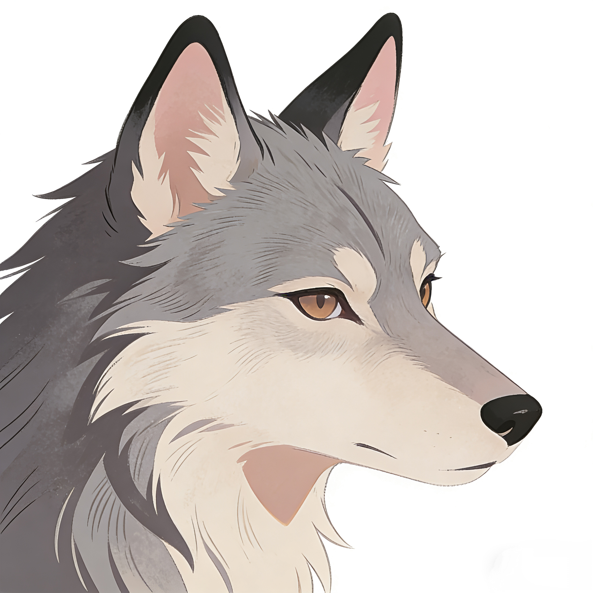

HJWJB音乐
搜索
选择API：
API 3
API 4
API 7
API 8
API 9
API 10
当前音乐源：--
选择音质：
无损 (999) - 默认
无损 (740)
320K
192K
128K
最高音质
设置
设置
×
播放列表
导入
导出
开关
动画
🎬 弹幕开关
流光开关
深色主题
歌词
逐字歌词：关闭
歌词对齐（提前/延后）
API 7
设置 API7 Key
已添加的歌单
代理
设置代理服务
下载
下载能力统计
清除下载记忆
彩蛋
疯狂星期四 v50
未播放歌曲
暂无歌手信息
暂无专辑信息
00:00
00:00
上一首
播放/暂停
下一首
歌词
暂无歌词
每日一言
刷新
点击“惊喜按钮”获取每日一言
播放列表
一键删除
播放列表为空
惊喜按钮